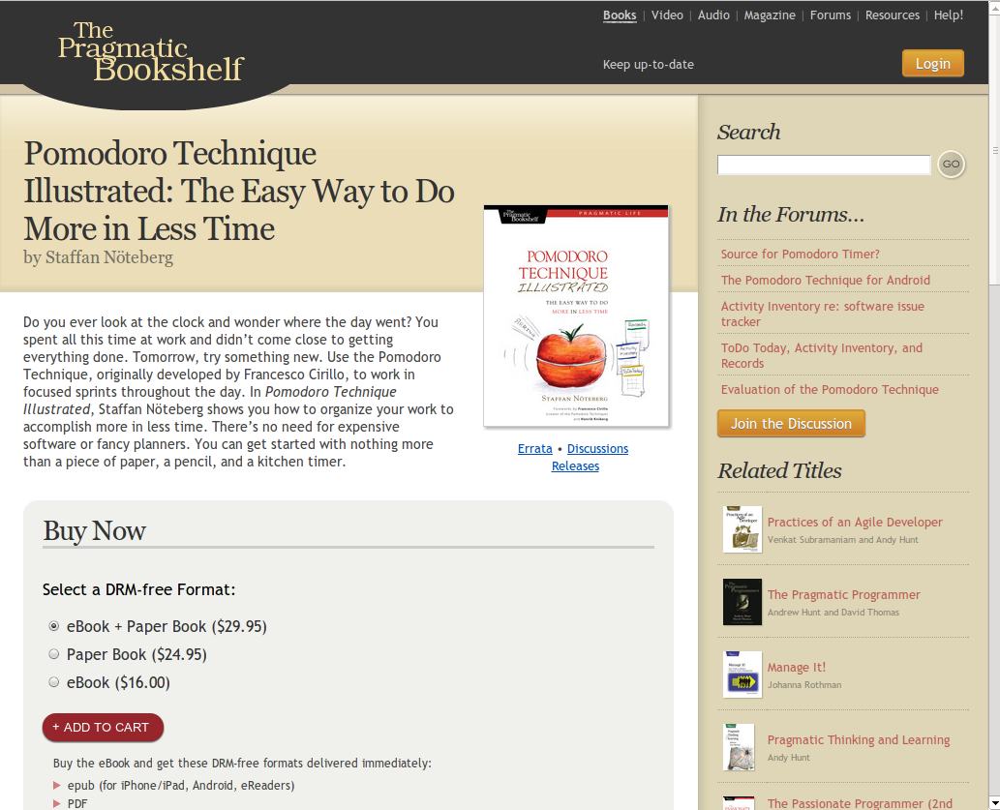

The Pomodoro Technique
The easy way to do more in less time
Personal reflections
Easy to get started even when it's boring or complex
"In just 25 minutes, I deserve my break!"
Headphones on means instant focus
Easier to estimate
The book

Iphone & Android
?
Deck.js
Thank you!
←
→
/
Go to slide:
#